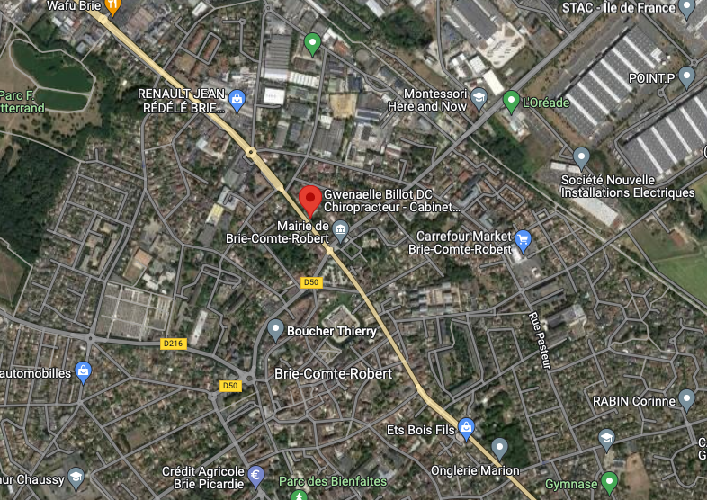

Maison de Santé Pluridisciplinaire du Trésor
La maison médicale est située au 37 avenue du Général Leclerc, 77170 Brie-Comte-Robert. Le batiment est accessible aux personnes à mobilité réduite. De nombreuses places de parking permettent de pouvoir se garer devant le cabinet ou dans la rue. La chiropraticienne accepte les règlements par Carte Bleue CB, Chèque et Espèces.
 Guidage